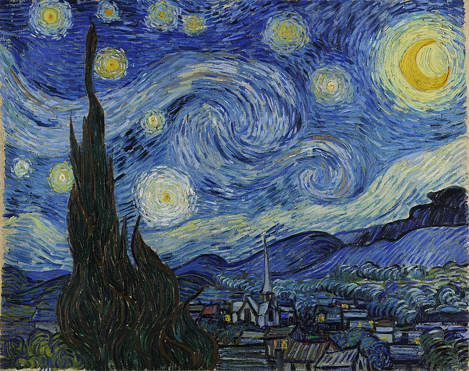

My name is Maliha Momtaz Moumi.Student at EDEN MOHILA COLLEGE.Lives in Dhaka.Love to travel,eat,shop and talk.
This is nothing.
Social meadia branding
Facebook Marketing
If you’re a brand hoping to thrive on social media, mastering Facebook marketing is going to be key.More than 2.8 billion people use the platform every single month. That’s a lot of potential eyeballs on your business.Because here’s the thing about Facebook: while you might think it’s just a place where your aunt can leave cryptic comments on your vacation pics, it’s also a place for audiences to connect with businesses big and small.In fact, two-thirds of Facebook users report visiting a local business Facebook Page at least once a week. This digital marketplace is downright bustling, if it’s not too bold of us to say.
Linkedin Marketing
LinkedIn is less about selling or marketing your products and services than other social platforms. On LinkedIn, blatantly pushing your business, spamming and obvious hard-selling are highly frowned upon. This is why having a marketing strategy specific to the platform is so important. Because the network consists of a totally different audience, LinkedIn marketing requires a different approach to get the results you want.According to Sprout Social, businesses marketing on LinkedIn generate 277% more leads on average than those engaged in Facebook marketing alone. Surveyed B2B marketers also said that LinkedIn is responsible for 80% of their social media leads. Used appropriately, LinkedIn is an effective marketing tool that can take your business to the next level.
What is website?
Here is a quote from Wikipedia.com website:
A website (also written as web site) is a collection of web pages and related content that is identified by a common domain name and published on at least one web server. Notable examples are wikipedia.org, google.com, and amazon.com.
All publicly accessible websites collectively constitute the World Wide Web. There are also private websites that can only be accessed on a private network, such as a company's internal website for its employees.Websites are typically dedicated to a particular topic or purpose, such as news, education, commerce, entertainment, or social networking. Hyperlinking between web pages guides the navigation of the site, which often starts with a home page.Users can access websites on a range of devices, including desktops, laptops, tablets, and smartphones. The app used on these devices is called a web browser.

The Starry Night is an oil-on-canvas painting by the Dutch Post-Impressionist painter Vincent van Gogh. Painted in June 1889
The code element
The HTML button tag defines a clickable button.
The CSS background-color property defines the background color of an element.
SSB 433 CR
Name and Title of Each CR
Title
Name
Main/Head CR
Tuhin TusharL
2nd CR
Masud Parvez
3rd CR/Assistant CR
Maliha Moumi
The datalist element
Note:I don't know what is this!I just copy and paste.